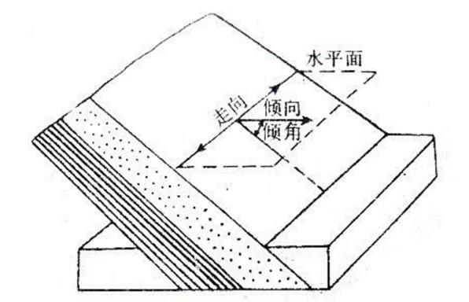
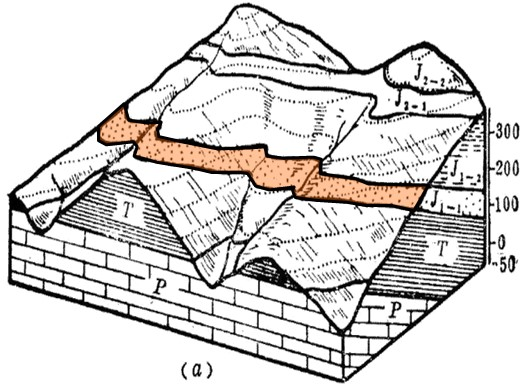
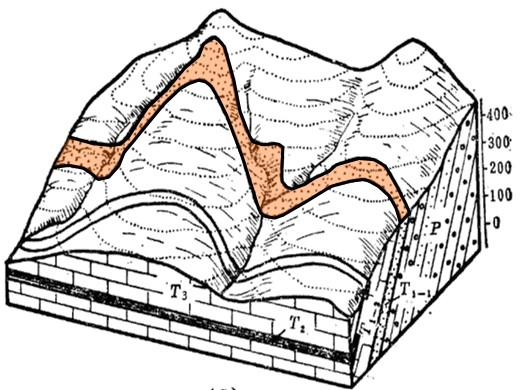
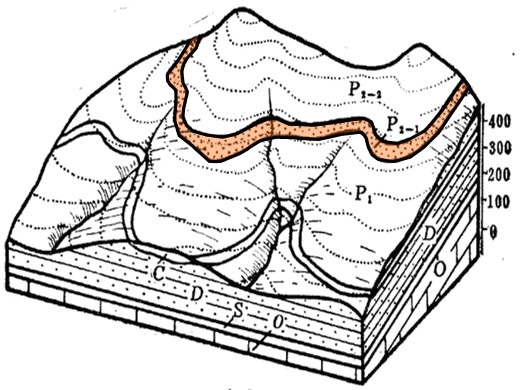
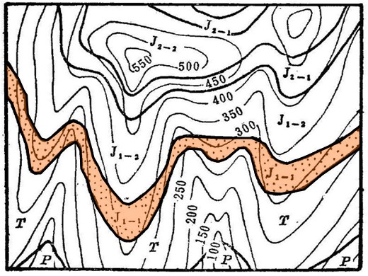
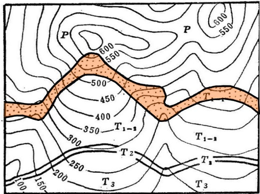
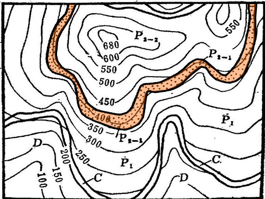
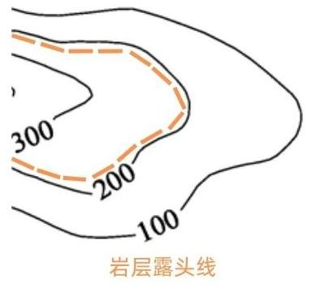
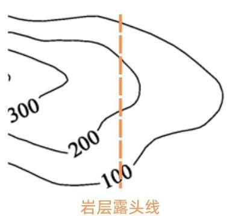
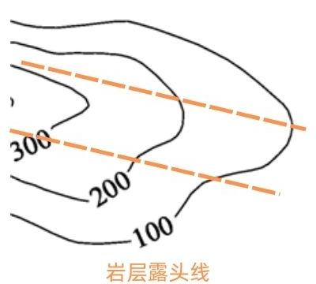

V字形法则，作为地质学中的一项重要原理，其背景源于对倾斜岩层起伏和地表界面之间关系的深入研究。 倾斜岩层穿越山脊和沟谷时，其露头线在地形地质图上常呈现V字形弯曲。 通过这一V字形弯曲与等高线之间的相对关系，可以判断地层的倾向与倾角，这一规律被称为V字形法则。
其意义在于为地质学者提供了判断岩层倾向和地质界面走向的有效工具。 通过应用V字形法则，地质学者可以更准确地勾绘地质界线，理解地质构造，进而为地质勘探、资源开发和地质灾害防治提供科学依据。
1、倾斜岩层：和水平面有一定交角的岩层
2、露头线：岩层面于地面的交线
3、岩层产状：走向、倾斜线、倾向、倾角
（1）走向：岩层面与任一假想水平面的交线
（2）倾斜线：岩层面上与走向线垂直并沿斜面向下所引的直线叫倾斜线
（3）倾向：倾向线在水平面上的投影方向
（4）倾角：倾斜线和其在水平面上投影的夹角
1、向反线同：岩层倾向与地面坡向相反→露头线与地形等高线呈相同方向弯曲，但露头线的弯曲度总比等高线的弯曲度要小
2、向同线反：岩层倾向与地面坡向相同，岩层倾角大于地形坡角→露头线与地形等高线呈相反方向弯曲
3、向同线同：岩层倾向与地面坡向相同，岩层倾角小于地形坡角→露头线与地形等高线呈相同方向弯曲，但露头线的弯曲度总是大于等高线的弯曲度
|
向反线同 |
向同线反 |
向同线同 |
|---|---|---|
|  |  |  |
|  |  |  |
以上法则内容可以通过极限法来记忆——我们将岩层视作一个平面，可以得到以下结果：
|
岩层倾向 |
水平 |
竖直 |
与坡向相同，倾角坡角相等 |
|---|---|---|---|
|
与等高线关系 |
与等高线重合 |
一个直线 |
两根直线 |
|
图示 |
 |  |  |
当岩层倾向连续变化的时候，地质图上的露头线也会连续变化。因此，借由上表的三种极端情况，我们可以更轻松地理解并记忆V字形法则。 例如，露头线与等高线同向且弯曲度更小的情况，处于上表中第一、第二类情况之间——即岩层倾向与地面坡向相反。